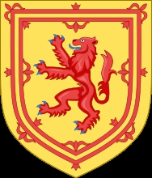
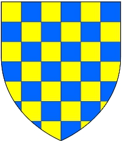

48070770 Earl David of Huntingdon
* omkring 1144 Huntingdon, Scotland
† 1219-06-17 Jedburgh, Roxburghshire, Scotland
Greve av Huntingdon
Blev ca 75 år
* omkring 1144 Huntingdon, Scotland
† 1219-06-17 Jedburgh, Roxburghshire, Scotland
Greve av Huntingdon
Blev ca 75 år

96141540 Prince Henry (Dunkeld) of Huntingdon
* omkring 1114 Scotland
† 1152-06-12 Kelso, Roxburghshire, Scotland
Prins av Scotland, Greve av Huntingdon & Northumberland
Blev ca 38 år
* omkring 1114 Scotland
† 1152-06-12 Kelso, Roxburghshire, Scotland
Prins av Scotland, Greve av Huntingdon & Northumberland
Blev ca 38 år
192283080 King David I of Scotland
* 1084 Scotland
† 1153-05-24 Carlisle, England
Kung av Scotland
Blev högst 69 år
* 1084 Scotland
† 1153-05-24 Carlisle, England
Kung av Scotland
Blev högst 69 år
384566160 King Malcolm III of Scotland
* 1031-03-26 Scotland
† 1093-11-13 Alnwick, England
Kung of Scotland
Blev 62 år
* 1031-03-26 Scotland
† 1093-11-13 Alnwick, England
Kung of Scotland
Blev 62 år
384566161 Saint (Queen) Margareta of Scotland
* omkring 1045 Slottet Reka, Ungern
† 1093-11-16 Edinburgh Castle, Scotland
Helgonförklarad. Drottning av Scotland
Blev ca 48 år
* omkring 1045 Slottet Reka, Ungern
† 1093-11-16 Edinburgh Castle, Scotland
Helgonförklarad. Drottning av Scotland
Blev ca 48 år
192283081 Queen Maud (Matilda) of Huntingdon
* omkring 1072
† 1130 Scotland
Drottning av Scotland, Grevinna av Huntingdon
Blev ca 58 år
* omkring 1072
† 1130 Scotland
Drottning av Scotland, Grevinna av Huntingdon
Blev ca 58 år
384566162 Earl Waltheof of Huntingdon
* omkring 1050 Wallsend, Tyne and Wear, England
† 1076-05-31 St. Giles Hill, Winchester, England
Greve av Northumbria
Blev ca 26 år
* omkring 1050 Wallsend, Tyne and Wear, England
† 1076-05-31 St. Giles Hill, Winchester, England
Greve av Northumbria
Blev ca 26 år
384566163 Countess Judith de Lens
* omkring 1054 Lens, Artois, France
† omkring 1086 Lens, Artois, France
Grevinna av Huntingdon
Blev ca 32 år
* omkring 1054 Lens, Artois, France
† omkring 1086 Lens, Artois, France
Grevinna av Huntingdon
Blev ca 32 år

96141541 Queenmother of Scotland Ada de Warenne
* omkring 1120 Surrey, England
† 1178 Huntingdon, Scotland
Drottningmoder, Grevinna av Northumberland
Blev ca 58 år
* omkring 1120 Surrey, England
† 1178 Huntingdon, Scotland
Drottningmoder, Grevinna av Northumberland
Blev ca 58 år
192283082 Earl William de Warenne
* 1081 Lewes, Sussex, England
† 1138-05-11 Lewes, Sussex, England
2nd Earl of Surrey
Blev högst 57 år
* 1081 Lewes, Sussex, England
† 1138-05-11 Lewes, Sussex, England
2nd Earl of Surrey
Blev högst 57 år
384566164 Earl William de Warenne
† 1088
1st Earl of Surrey
† 1088
1st Earl of Surrey
384566165 Gundred
† 1085 Castle Acre, Norfolk, England
† 1085 Castle Acre, Norfolk, England

192283083 Isabel (Elizabet) de Vermandois
* 1085 Valois, France
† 1131-02-13 England
Blev högst 46 år
* 1085 Valois, France
† 1131-02-13 England
Blev högst 46 år

384566166 Count Hugh Capet de Vermandois
* 1053 France
† 1102-10-18 Tarsus, Icel, Turkiet
Greve av Vermandois
Blev högst 49 år
* 1053 France
† 1102-10-18 Tarsus, Icel, Turkiet
Greve av Vermandois
Blev högst 49 år
384566167 Countess Adelaide de Vermandois Carolingians
* 1050 Lot.et-Garonne, Aquitaine, France
† 1120-09-23 Meulan, Yvelines, Frankrike
Grevinna av Vermandois
Blev högst 70 år
* 1050 Lot.et-Garonne, Aquitaine, France
† 1120-09-23 Meulan, Yvelines, Frankrike
Grevinna av Vermandois
Blev högst 70 år